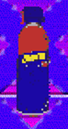
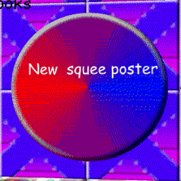

New squee is the WD-NoSquee (Door Type) replacement in "Moldy's Basics In Being Le Modder"(/"MBIBLM").
Aliases
New squee, NS, Unnamed WD-NoSquee (Door Type) replacement.
Appearance
It appears as a dithered bottle of WD-40.
Gallery


Trivia
- New squee looks the same as WD-NoSquee (Door Type).
Poster Description
"New squee poster"
Return to Main Page